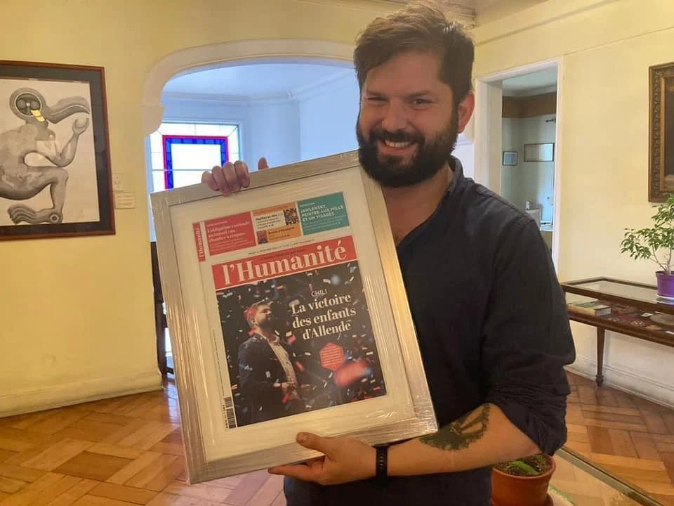

Publication d’archives
Le président élu du Chili Gabriel BORIC tient la UNE de l'Humanité, qui titre sur la victoire des enfants…
Date indiquée par Facebook · 7 janvier 2022
Texte conservé avec la publication
Contexte du dossier
Les publications des 21 et 22 décembre saluent la victoire présidentielle de Gabriel Boric. La première souligne une alliance large et l’absence de majorité parlementaire ; le communiqué fédéral rappelle aussi l’accueil d’exilés chiliens après le coup d’État de 1973. Les deux textes relient le résultat aux mouvements sociaux, étudiants et féministes. Le 7 janvier, une une de L’Humanité prolonge cet espoir sous le signe des enfants d’Allende. L’élection est présentée comme une ouverture, dont les suites restent à construire face aux intérêts économiques. Elle ne permet pas de tenir pour achevées les transformations constitutionnelles alors espérées.

Sources
Archive rouge · export Facebook · AR-0002-FB-01990
À lire aussi · Salut au peuple chilien après l’élection de Gabriel Boric